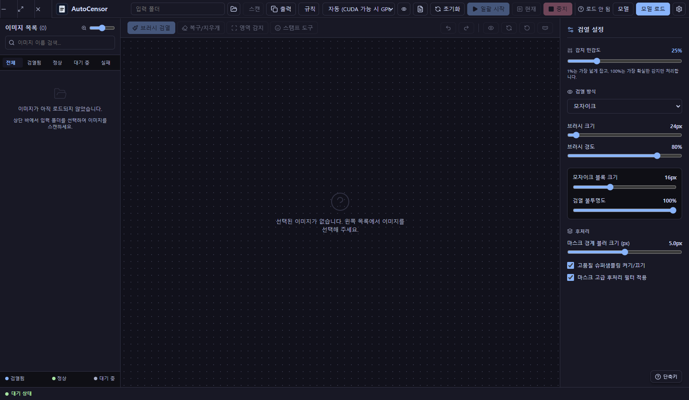
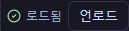
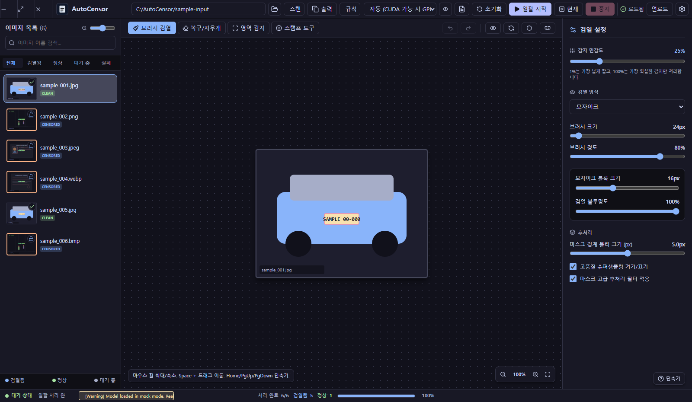
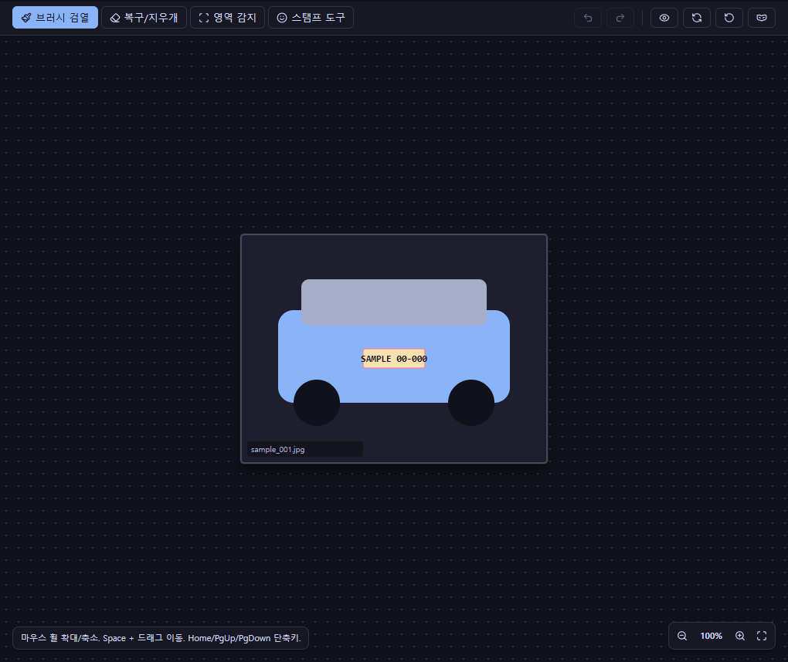

1
이미지 폴더 선택
앱을 열면 빈 작업공간이 나타납니다. 상단의 '입력 폴더'를 선택하면 폴더 안의 이미지가 목록에 채워지고 ‘대기 중’으로 표시됩니다.

이 단계까지는 자동 감지가 동작하지 않습니다. 목록만 만들어집니다.
Quickstart · 약 1분
AutoCensoR는 이미지 폴더의 보호할 영역을 자동으로 찾고, 필요한 부분만 사람이 빠르게 다듬는 Windows 앱입니다. 아래 순서대로 따라 하세요.
앱을 열면 빈 작업공간이 나타납니다. 상단의 '입력 폴더'를 선택하면 폴더 안의 이미지가 목록에 채워지고 ‘대기 중’으로 표시됩니다.

우측 상단 모델 로드 버튼을 누릅니다. 로드 전에는 ‘로드 안 됨’으로 표시되고, 로드가 끝나면 자동 감지가 준비되어 일괄 처리를 시작할 수 있습니다.

'일괄 시작'(F5) 버튼으로 일괄 처리를 실행하면 폴더 전체에서 감지된 영역에 보호가 적용됩니다. 하단에 처리 완료 개수와 소요 시간이 표시됩니다.

자동 결과 위에서 브러시 검열(B), 복구/지우개(X), 영역 감지(D), 스탬프 도구(E), 퀵마스크(A)로 필요한 곳만 다듬습니다. 영역 감지는 오른쪽 버튼으로 드래그합니다.

처리와 보정 결과는 작업을 진행하는 동안 자동으로 적용·저장됩니다. 출력 폴더에 접미사를 붙여 저장되며, 별도의 수동 저장 단계는 필요하지 않습니다.